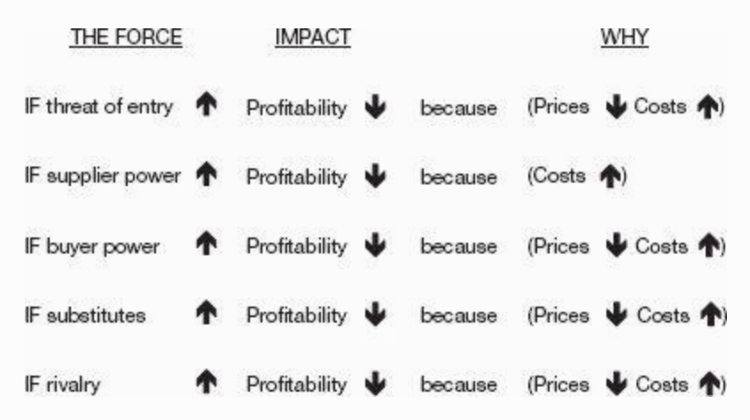
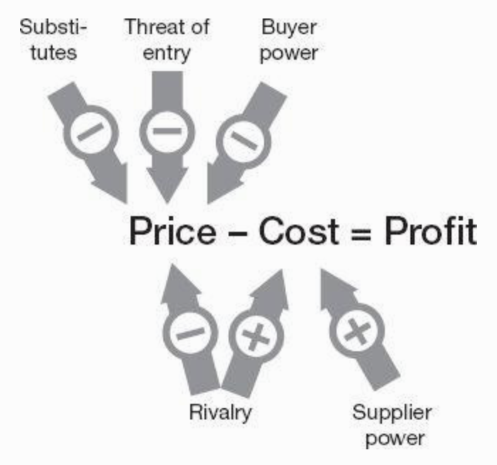
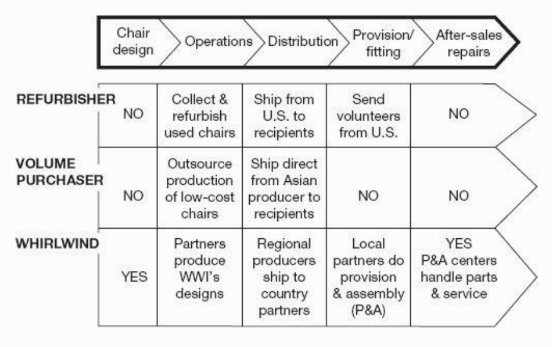
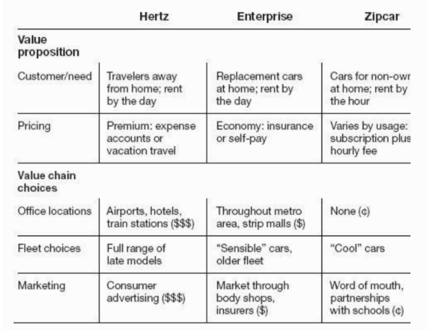
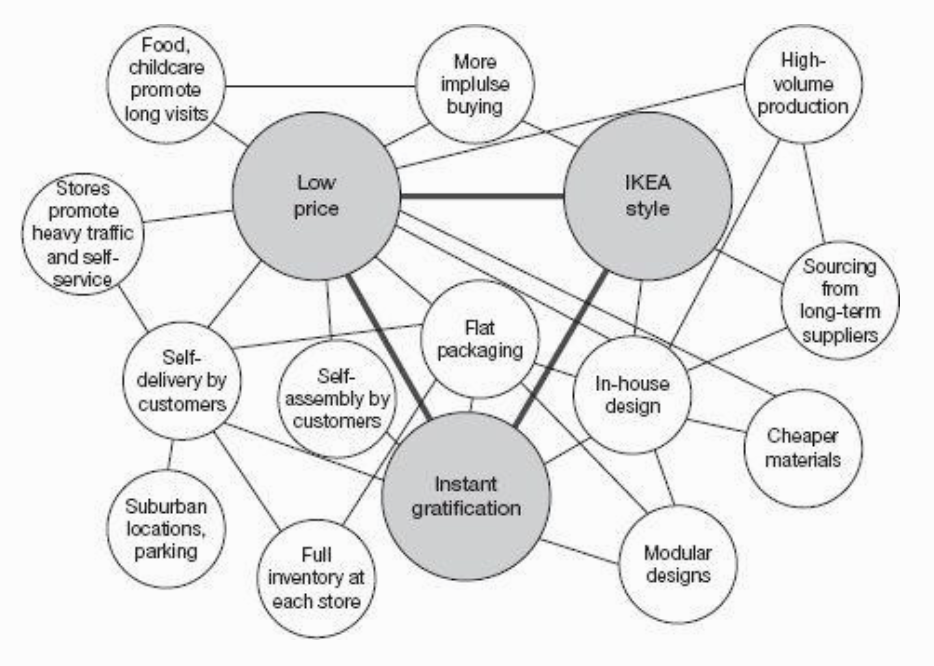

- Only by competing to be unique can an organization achieve sustained superior performance
- Competitive advantage is about how your value chain will be different and your P&L better than the industry average
- A distinctive value proposition will translate into meaningful strategy only if the activities to deliver it is different from the activities performed by rivals
- Aim to be unique,not best. Creating value, not beating rivals is the heart of competition
- Strategy is shorthand for a good competitive strategy that will result in sustainable superior performance
- Competition to be the best leads to flawed strategy and mediocre performance
- When all rivals compete on the same dimension, no one gains a competitive advantage
- Focus on creating superior value for the chosen customers, not imitating and matching rivals
- Competing to be the best feeds on imitation. Competing to be unique thrives on innovation
Porter’s Five Forces
The following five forces determine an industry’s structure
- Intensity of rivalry among existing competitors
- Bargaining power of buyers
- Bargaining power of suppliers
- Threat of substitutes
- Threat of new entrants
The fundamental Equation of Business:
\[ Unit\ Profit\ Margin = Price - Cost \]
Within a given industry, the relative strength of the fiver forces and their specific configuration determine the industry’s profit potential because they directly impact the industry’s prices and costs

Figure 1: Impact of the 5 Forces
Buyers
- Powerful buyers will force prices down or demand more value in the product thus capturing more value for themselves
E.g. Walmart can impose tough terms on any supplier,
- Industrial and retail consumers tend to be more price sensitive when what they are buying is
- undifferentiated
- expensive relative to their other costs or incomes
- inconsequential to their own performance
Suppliers
- Powerful suppliers will charge higher prices or insist on more favorable terms, lowering industry profitability E.g. Intel and Microsoft being suppliers of chips and software captured most of the value from PC manufacturers
Strength of Buyers and Suppliers
Buyers and Suppliers tend to be powerful if
They are large and concentrated relative to an industry (which they supply or buy from) that is fragmented.
If a large fraction of an industry’s sales comes from a few suppliers or buyers.The industry needs them more than they need the industry . E.g. Doctors have tremendous bargaining power because they are essential and in short supply
Switching costs work in their favor.
Microsoft is a powerful supplier as it is difficult for an enterprise to move away from WIndows. Airline Passengers are powerful buyers as they can easily switch between airlines.Differentiation works in their favor.
Intel and Microsoft have differentiated offerings and are more powerful than the PC industry they supply.They can threaten to vertically integrate into producing the industry’s product itself.
E.g. Apple has been a powerful buyer of Intel chips and have now started designing their own chips.
Substitutues
- Products or services that meet the same basic need as the industry’s product in a different way put a cap on industry profitability
E.g. Tax preparation software such as turbo tax is a substitute for a professional tax preparer such as H&R Block
New Entrants
Entry barriers protect an industry from newcomers who would add new capacity.
Entry barriers can be one of the following
- Economies of scale
Netflix is able to spread the cost of developing new content over a large customer base and keep prices low. New entrants will have to charge much higher prices to able to make similar investment in content.
Switching costs
Network effects
It is difficult to start a new social network to compete with Facebook if all your friends are already on Facebook
- Cost of entering a business such as capital investment required.
Drug companies don’t have to worry about new entrants as it requires massive investments to develop new drugs.
Unique advantages that incumbents enjoy such as proprietary technology, brand,prime location and access to distribution channels
Regulations Regulatory compliance software that has been blessed by regulators makes it challenging for a new start up to dislodge the incumbent. Banks are reluctant to experiment with something new rather than an established player.
How aggressively can an incumbent defend its position, does it have the resources to compete aggressively ?
Rivalry
If rivalry is intense, companies compete away the value they create, passing it on to buyers in lower prices or dissipating it in higher costs of competing.
Intensity of rivalry in an industry can be assessed by considering the following
Are competitors of even size and power. Can an industry leader enforce practices that align the whole industry?
Is the industry growing? If not competitors have to fight to get a bigger share of a fixed pie.
High exit barriers such as specialized assets that can’t be sold that prevent a competitor from exiting the industry
Irrational commitments such a state driven enterprise run for national pride as against profit.
Price competition is the most damaging for of rivalry and is most common when
No differentiation in competitor’s offerings
High fixed costs and low marginal costs creates pressure to drop prices because new customers will “contribute to covering overhead”. True for airlines and software but software is highly differentiated.

Figure 2: Impact of the 5 Forces on Profitability
When there are differences in more than one force, or where differences in any one force is large, you are likely dealing with distinct industries
Strategy can be viewed as building defenses against competitive forces or finding a position in the industry where the forces are weakest. e.g. Paccar trucks which had an ROIC of 30.6% compared to the industry average of 10.5%. It accomplished this by uniquely positioning trucks for individual owner operator truck drivers.
Competitive Advantage
If you have a real competitive advantage, it means that compared with rivals, you operate at lower cost, command a premium price or both.
Competitive advantage is superior performance resulting from sustainable higher prices, lower costs or both
In gauging competitive advantage, returns must be measured relative to other companies within the same industry
The best financial measure of competitive advantage in Return on Invested Capital (ROIC).ROIC weights the profits a company generates versus all the funds invested in it, operating expenses and capital.
For higher profitability you need to be able to
- Charge a higher price. Differentiation refers to the ability to charge a higher relative price. By creating more buyer value, you raise their willingness to pay (WTP)E.g. Apple
- Produce at a lower cost. Cost advantages stem from a culture of low cost operation that permeates the entire company e.g. IKEA
Competitive advantage stems from having a superior and differentiated value chain where value chain is the sequence of activities a company performs to design, produce, sell, deliver and support it’s products. Your activities along with that of your suppliers, channels and customers creates a value system.
Value Chain Analysis
Layout the major value creating activities specific to your industry. Do the same for different business models and competitors

Figure 3: Value Chain for NGOs supplying wheel chairs
If your value chain looks like everybody else’s , you don’t have a competitive strategy and are engaged in competition to be the best
Zero in on price drivers ,those activities that have a high current or potential impact on differentiation. See if you can create value by performing any of these activities distinctively or by performing activities competitors are not performing E.g. Source only fresh ingredients like In-N-Out burger
Zero in on cost drivers, especially activities that represent a large or growing percentage of costs. See if you can do these activities more efficiently. E.g. Southwest Airlines identified gate turnaround times are a major cost driver , and these turn around times are high because of the time it takes to drain the lavatories. Southwest solved this problem by getting the plane supplier Boeing to reposition the service panel where the equipment to drain the lavatory is plugged into.
Match the vales chain and activities performed by the company to the customer’s definition of value, an activity that does not add value to the end customer can be eliminated. E.g. Charles Schwab reduced brokerage fees by doing away with investment advice and offering just low cost trades.
Value chains can span across organizations, so designing and managing the value chain across the entire supply chain from suppliers to distributors is critical to developing a successful competitive strategy.
Creating Value
To have sustainable competitive advantage, you must tailor a value chain specifically to deliver your value proposition. Strategy means deliberately choosing a unique mix of activities to deliver a unique set of values.
Value proposition is the answer to the following three fundamental questions
- Which customers are you going to serve?
- What end user users?
- What channels?
- Walmart focused on rural customers initially
- Progressive focused on “non standard” drivers more likely to be involved in an accident
- Which needs are you going to meet ?
- Which products?
- Which features?
- Which services?
- The needs you choose to address means the customer segment you are targeting is non-standard.
- Enterprise chose to address needs of city dwellers at affordable prices unlike Hertz who focused on travelers willing to pay a premium price.
- Zipcar addresses needs of city dwellers who choose not to own a car and provided hourly pricing unlike Enterprise’s daily pricing
- What relative price?
- Premium or Discount?
- When customer needs are underserved, you can have premium pricing. E.g. Bang & Olufsen serves customers who want great sound and design.
- When customers are overserved, you can have discounting by serving only the critical and essential needs. E.g. Southwest offers lots of flights at lower price and with convenient service.
- Which customers are you going to serve?
If you are trying to serve the same customers and meet the same needs and sell at the same relative price, then by Porter’s definition, you don’t have a strategy.
The essence of strategy and competitive advantage lies in choosing to perform activities differently or to perform different activities from those of rivals.
- E.g. To serve city dwelling customers at a lower price points, enterprise chose small offices, often simple storefronts spread over a metropolitan area.
- Zipcar on the other hand eliminates stores entirely by making the booking experience fully online.
A common strategic mistake is to try and be all things to all customers and be outflanked by cost leaders on one side, who meet just enough customer needs and by differentiators on the other side.
Choices in the value proposition that limit what a company will do are essential to strategy because that creates the opportunity to tailor activities in a way that best delivers that kind of value

Figure 4: Unique value propistions and unique value chains
- Only a value proposition that requires a tailored value chain to deliver it can serve as the basis for a robust strategy. This is the first line of defense against rivals.
- The value proposition and the value chain are the two core dimensions of strategic choice. The value proposition focuses externally on the customer. The value chain focuses internally on operations. Strategy integrates these two sides(supply and demand) together.
Trade-offs
- Competitive advantage depends on making choices that are different from those of rivals, on making trade offs
- E.g. Taiwan Semiconductor(TSMC) chose to become a manufacturer of chips unlike other players who were integrated device manufacturers(IDM) who did design and manufacturing.
Real trade-offs are choices that make strategies sustainable because competitors cannot easily copy them without rolling back or contradicting some of the choices they made.
McDonald’s attempt to introduce more customization in their menus to match Wendy’s and Burger King but failed as it meant compromising on it’s strategy of a uniform, limited menu which allowed for a fast and efficient process.
Blockbuster , with it’s 5000 plus local stores was unable to match Netflix mail-order delivery model that was built on the back of 50 plus regional warehouses and a state of the art distributions system
When you try to offer something for everyone, you tend to relax the trade-offs that underpin your competitive advantage.
Unless executives make trade-offs and deliberately choose not to serve all customers and needs, then they are unlikely to do a good job of serving any customers and needs
“Strategy is making trade - offs in competing. The essence of strategy is choosing what not to do” - Michael Porter
Fit
- Good strategies depend on the connection among many things, on making interdependent choices
- E.g. IKEA uses flat packs for shipping and choose sub-urban locations outside the city. These choices are interdependent. Value of flat packs are amplified by car friendly locations that make it easier for customers to load purchases into the car
- Fit means that the value or cost of one activity is affected by the way other activities are performed
- The first kind of fit is basic consistency where each activity is aligned with the company’s value proposition and each contributes incrementally to its dominant themes.
- E.g. Zara is focused on quickly responding to changes in fashion trends. So its activities are configured for rapid response.
- Plants are located nearby
- It owns a fleet of trucks to ensure rapid delivery
- Invest in IT speed communications between design and manufacturing
- E.g. Zara is focused on quickly responding to changes in fashion trends. So its activities are configured for rapid response.
- A second type of fit occurs when activities complement or reinforce each other. Real synergy is when the value of one activity is reinforced by another.
- E.g.: Home depot’s huge selection of items in large warehouses would make customers feel lost if it were not for excellent service.
- A third type of fit is substitutions. Performing one activity makes it possible to eliminate another
- E.g. IKEA’s full-room displays and product hang-tags substitute for sales associates
- A common mistake in strategy is to choose the same core competencies as everyone else in your industry.
- Outsourcing activities that are or could be tailored to strategy and are strongly complementary with others is risky
- Fit makes competitive advantage sustainable against new entrants. Replicating a complex system whose parts fit together seamlessly is hard.
Mapping Activity System
- Identify the core elements of the value proposition e.g. For IKEA, this is distinctive design, low prices and immediate use
- Identify the salient activities performed in the business, those responsible for creating customer value or generate significant cost
- Place activities on the map, and draw lines connecting them if an activity contributes to the value proposition or where two activities affect each other. E.g. flat packs contribute to low price and immediate use.
- A tangled dense map suggests a strong strategy, if it is sparse the strategy is probably weak.
- Determine if there are services, features or product varieties you can offer because of the other things you already do.

Figure 5: Map of IKEA’s Activity System
- Strategy is a system of interconnected choices
Continuity
Continuity enables the development of strategy as the other elements of strategy such as tailoring a value chain, trade-offs and fit take time to develop.
Why is continuity essential?
- Continuity reinforces a company’s identity - it builds a company’s brand, its reputation, and its customer relationships. A good strategy defined by a unique value proposition and accompanying elements maintained over time through repeated interactions with customers is what gives power to a brand.
- Continuity helps suppliers, distributors, employees and other outside parties to contribute to a company’s competitive advantage
- Continuity fosters improvements in individual activities and fit across activities; it allows an organization to build unique capabilities and skills tailored to its strategy. Continuity allows companies to institute and hone their culture and HR practices. Continuity ensures employees get what the company is trying to do and contribute to its mission more meaningfully.
- Shifts in strategy requires realigning a whole host of activities that are often very hard to get right. If it involves aligning 5 new activities and the probability of getting each activity right is 0.9, the probability of getting the new strategy right is $0.9^5 = 0.59 $
Continuity of strategy does not mean that an organization should stand still. As long as there is stability in the core value proposition, there can, and should be enormous innovation in how it is delivered.
Great strategies are rarely, if ever, built on a particularly detailed or concrete prediction of the future. You only need a very broad sense of which customers and needs are going to be relatively robust five or ten years from now. Strategy is essentially a bet that the chosen customers or needs and the essential trade-offs for meeting them at the right price-will be enduring.
- Dell bet that as people became more familiar with computers, they will forego retailers and resellers when buying a computer
- Southwest only had to predict people want low-cost, convenient transportation.
“That is what strategy is all about . It’s about a point of view of the future and then making decisions based on that. The worst think you can do is not have a point of view, and not make decision” - Alan Mulally
Five tests of good strategy
- A unique value proposition
- Are you offering distinctive value to a chosen set of customers at the right relative price
- A tailored value chain
- Is the best set of activities to deliver your value proposition different from the activities performed by rivals?
- Trade-offs different from rivals
- Are you clear about what you don’t do so that you can deliver your kind of value most efficiently and effectively?
- Fit across the value chain
- Is the value of your activities enhanced by the other activities you perform?
- Continuity over time
- Is there enough stability in the core of your strategy to allow your organization to get good at what it does, to foster tailoring, trade-offs and fit?
When does strategy need to change?
- When customer needs change. As this happens, a company’s core value proposition may become obsolete
- Innovation of all sorts can invalidate the essential trade-offs on which a strategy relies.
- E.g. Rise of cheap Original Design Manufacturers has allowed competitors like HP to outsource design and assembly wiping out Dell’s cost advantage
- A technological or managerial breakthrough can completely trump a company’s existing value proposition.
- E.g. Digital photography disrupted Kodak
- Innovation of all sorts can invalidate the essential trade-offs on which a strategy relies.
- What must change?
- A company must be on the frontier of operational effectiveness and quality of execution, else strategy won’t matter. Assimilate best practices that do not conflict with your strategy or the trade-offs essential to it.
- E.g. BMW using crash simulations rather than relying solely on physical crash testing
- A company must change when there are ways to extend your value proposition or better ways to deliver it.
- Netflix was always focused on transitioning from mail order DVDs to internet streaming.
- A company must be on the frontier of operational effectiveness and quality of execution, else strategy won’t matter. Assimilate best practices that do not conflict with your strategy or the trade-offs essential to it.
- If you don’t have a strategy, then anything and everything could be important. A strategy helps you to decide what’s important because you know who you are trying to serve, what needs you are trying to meet, and how your value chain is distinctively configured to do so at the right price.
Ten Practical Implications
- Vying to be the best is an intuitive but self-destructive approach to competition
- There is no honor in size or growth if those are profitless. Competition is about profits, not market share
- Competitive advantage is not about beating rivals; it’s about creating unique value for customers. If you have a competitive advantage , it will show up on your P & L
- A distinctive value proposition is essential for strategy. But strategy is more than marketing. If your value proposition doesn’t require a specifically tailored value chain to deliver it, it will have no strategic relevance
- Don’t feel you have to “delight” every possible customer out there. The sign of good strategy is that it deliberately makes some customers unhappy
- No strategy is meaningful unless it makes clear what the organization will not do. Making trade-offs is the linchpin that makes competitive advantage possible and sustainable
- Don’t overestimate or underestimate the importance of good execution. It’s unlikely to be a source of a sustainable advantage, but without it event the most brilliant strategy will fail to produce superior performance.
- Good strategies, depend on many choices, not one and on the connections among them. A core competence alone will rarely produce a sustainable competitive advantage
- Flexibility in the face of uncertainty may sound like a good idea, but it means that your organization will never stand for anything or become good at anything. Too much change can be just as disastrous for strategy as too little.
- Committing to a strategy does not require heroic predictions about the future. Making the commitment actually improves your ability to innovate and to adapt to turbulence.